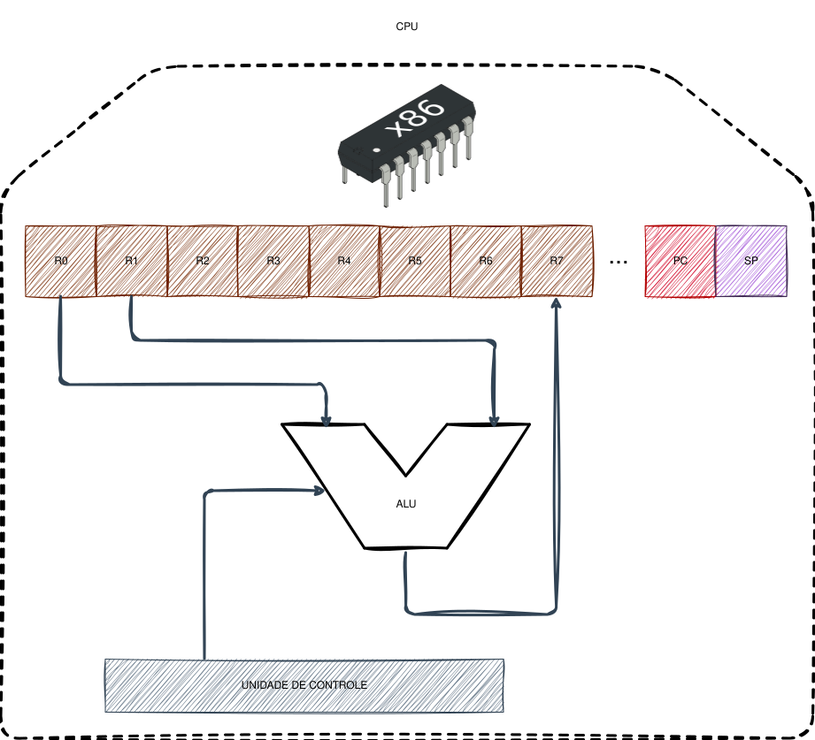

Como o computador funciona3.1
Antes de explorarmos o funcionamento de um compilador, é fundamental compreendermos a base sobre a qual ele opera: a unidade de processamento central (CPU).
Para quem já cursou sistemas digitais ou arquitetura de computadores, este processo pode ser familiar. Contudo, para uma compreensão universal, utilizaremos uma abstração poderosa presente em diversas áreas da computação: a Máquina de Estados Finitos.
O que é uma Máquina de Estados3.1.1
Uma máquina de estados (ou Finite State Machine - FSM) é um modelo matemático que descreve o comportamento de um sistema através de um conjunto limitado de estados e das transições entre eles. Em qualquer instante, o sistema ocupa exatamente um único estado.
A transição para um novo estado ocorre apenas quando um gatilho ou evento específico acontece, garantindo que o sistema reaja de forma organizada e previsível. Na prática, essa estrutura permite que o sistema saiba exatamente o que fazer em cada contexto, evitando comportamentos inesperados. Esse conceito controla desde dispositivos simples, como semáforos e elevadores, até lógicas complexas em software, como protocolos de rede e a inteligência artificial de jogos.
Uma CPU Didática3.2
Para ilustrar esses conceitos, utilizaremos a arquitetura MIPS, um modelo de 32 bits amplamente adotado no ensino de computação por sua elegância e clareza. O MIPS opera com um pipeline de 5 etapas, que funciona como uma linha de montagem de fábrica.
Abaixo, observamos o diagrama do circuito lógico do processador MIPS e as divisões de seu pipeline:

Busca da Instrução3.2.1
Nesta etapa inicial, encontramos o Program Counter (PC). O PC é um registrador especial que armazena o endereço da próxima instrução a ser executada. Quando um programa inicia, o PC geralmente começa em zero.
O valor do PC é enviado à memória de instruções (carregada na RAM) para buscar o código correspondente. Simultaneamente, o valor do PC passa por um somador que adiciona uma constante. Em arquiteturas de 32 bits como o MIPS, embora o menor dado endereçável seja o byte (8 bits), uma palavra de instrução completa (WORD) possui 32 bits (4 bytes). Por isso, somamos sempre 4 ao PC para que ele aponte para a próxima instrução na sequência ($4 \text{ bytes} \times 8 \text{ bits} = 32 \text{ bits}$).
Decodificação3.2.2
Aqui, a CPU interpreta o que a instrução buscada deve fazer. Cada processador possui um conjunto específico de instruções conhecido como ISA (Instruction Set Architecture). Exemplos famosos incluem x86 (Intel/AMD), ARM e RISC-V.
No nível de código, utilizamos mnemônicos como ADD $t0, $t1, $t2. No entanto, para o hardware, isso é apenas uma sequência de bits (ex: 000000). O papel deste estágio é:
- Identificar a operação: Através de uma "tabela verdade" gigante no hardware, a unidade de controle ativa os caminhos corretos do circuito.
- Acessar Registradores: Identificar quais registradores contêm os dados necessários. O MIPS possui 32 registradores de uso geral. Como esse número é pequeno, o compilador deve ser inteligente ao decidir quais dados manter ali e quais enviar para a RAM.
- Extensão de Sinal: Se a instrução usar uma constante pequena, o processador expande esse valor para 32 bits para que a operação seja compatível.
Execução3.2.3
A operação é efetivamente realizada na ALU (Arithmetic Logic Unit). Além de somas e subtrações, a ALU é crucial para o controle de fluxo (como o comando if).
Nas CPUs, saltos condicionais (branches) geralmente dependem de uma comparação. Por exemplo, para executar if (i == 10), a CPU subtrai 10 de i. Se o resultado for zero, uma flag zero é ativada. Essa flag avisa o processador que ele não deve seguir para a instrução PC + 4, mas sim carregar um novo endereço de memória no PC, desviando a execução para outra parte do código.
Memória e Escrita3.2.4
O quarto estágio acessa a memória RAM apenas se a instrução for de leitura (LOAD) ou escrita (STORE). No quinto estágio, o resultado de um cálculo (como a soma do estágio 3) é finalmente gravado de volta no banco de registradores para ser usado por instruções futuras.
Os blocos verdes no diagrama são registradores de estágio. Eles salvam os resultados intermediários para que, enquanto uma instrução está sendo executada, a próxima já possa começar sua execução de forma simultânea, aumentando drasticamente a performance global.
A Nossa Máquina Virtual (VM)3.3
Para facilitar o foco na construção do compilador, utilizaremos uma versão simplificada de CPU em nossa máquina virtual, similar à arquitetura da JVM (Java Virtual Machine).

Diferente do MIPS, nossa VM focará no registrador SP (Stack Pointer). Embora o PC continue existindo, a VM gerenciará grande parte da lógica de controle para nós.
Adicionando Memória à VM3.3.1
Para que nossa VM seja útil, precisamos entender como ela interage com a memória. Dividimos essa interação em duas seções principais:

- Memória Convencional (RAM): Memória efêmera onde guardamos dados que não cabem nos registradores ou estruturas grandes como arquivos. O acesso é feito via
LOAD(carregar) eSTORE(salvar), exigindo sempre um endereço específico. - A Pilha (Stack): Esta é a seção mais importante para o nosso compilador. Ela funciona com as operações
PUSH(empilhar) ePOP(desempilhar).
Por que usar uma Pilha?3.3.1.1
Trabalhar com um número restrito de registradores exige que o compilador realize uma tarefa complexa chamada alocação de registradores. Ao utilizarmos uma Máquina de Pilha, simplificamos a geração de código, podemos apenas empilhar valores, realizar operações com o topo da pilha e desempilhar o resultado. Isso remove a necessidade de gerenciar qual dado vai para qual registrador, permitindo que foquemos na lógica de tradução da linguagem.
O Fluxo Completo3.3.1.2
Abaixo, vemos como o código, a memória e a CPU se integram:

Neste modelo, o PC aponta para a instrução atual (ex: ADD). Após a execução, o PC é automaticamente incrementado, a menos que uma instrução de salto force o processador a "pular" para um endereço diferente. Essa alternância entre execução sequencial e saltos é o que permite a existência de loops, funções e toda a complexidade dos softwares modernos.
Questões3.4
Qual é a função do registrador Program Counter, o PC, e por que em várias arquiteturas de 32 bits, como o MIPS, ele é incrementado em 4 bytes a cada instrução sequencial?
Explique a principal diferença de gerenciamento de dados entre uma arquitetura baseada em registradores, como o MIPS, e a arquitetura baseada em pilha que utilizaremos na nossa máquina virtual.
Em qual situação o registrador PC não segue o seu incremento automático sequencial e como isso se relaciona com a execução de desvios no código?
Próximos passos3.5
No próximo capítulo, Etapas do processo de compilação, iremos analisar e compreender, em alto nível, as etapas do processo de compilação. Esse entendimento será fundamental para, em seguida, começarmos a estudar cada um dessas etapas em específico e, portanto, começarmos a escrevermos o código para o nosso compilador.